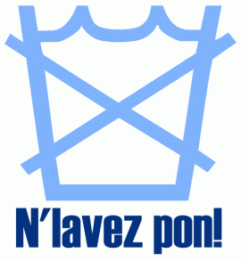

|
Jèrriais |
Angliais |
|
airer lé lînge |
to air laundry |
|
blianchi |
to bleach |
|
bliatchinner les souliers |
to polish shoes |
|
brîngi |
to sweep |
|
chiffonner |
to dust |
|
chither |
to wax |
|
êpongi |
to sponge, to mop up |
|
êpousseter |
to dust |
|
essuyer |
to wipe |
|
êtendre lé lînge |
to hang out laundry |
|
eune brînge à dents |
toothbrush |
|
eune brînge à main |
brush |
|
eune chique |
rag |
|
eune corde à lînge |
clothes line |
|
eune êpile à lînge |
clothes peg |
|
eune êponge |
sponge |
|
eune êtendpèrque |
clothes line prop |
|
juser lé lînge |
to wring laundry |
|
teurtre lé lînge |
to wring laundry |
|
eune machinne à laver les vaissieaux |
dishwasher |
|
eune machinne à laver |
washing machine |
|
eune machinne à rinchi |
rinsing machine |
|
eune sèrviette |
towel |
|
féther |
to iron |
|
la brînge |
broom |
|
lé litchide à laver |
washing liquid |
|
lé litchide à vaissieaux |
washing up liquid |
|
la nettithie |
cleaning |
|
la savonnée |
lather, suds |
|
la savonnette |
shaving brush |
|
la scrobinne-broche |
scrubbing brush |
|
laver les vaissieaux |
to do the washing up |
|
laver |
to wash |
|
lé bliatchîn |
shoe polish |
|
lé féthage |
ironing |
|
lé lavage |
washing |
|
lé poudre à laver |
washing powder |
|
lé savon |
soap |
|
lé s'tchage du lînge |
drying laundry |
|
lé s'tcheux |
dryer |
|
netti |
to clean |
|
ouâchinner |
to give a good scrub |
|
poli |
to polish |
|
prêssi |
to press |
|
ramonner eune cheum'née |
to sweep a chimney |
|
rinchi |
to rinse |
|
scrober |
to scrub |
|
s'tchi |
to dry |
|
teurtre lé lînge |
to wring laundry |
|
torchi |
to wipe |
|
un bostchot |
waste paper basket |
|
un bathi à tés |
litter bin |
|
un dou à laver |
lavoir |
|
un êgoutteux |
draining board |
|
un êpousseteux |
feather duster |
|
un êssuyeux |
tea towel |
|
un laveux |
dishcloth |
|
un nettisseux |
cleaner |
|
un polisseux |
polisher |
|
un v'loûsé |
polishing pad |

Viyiz étout: